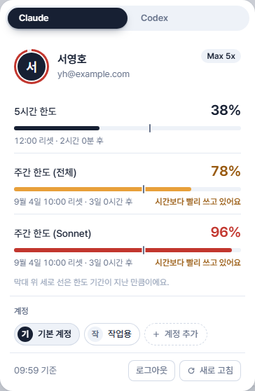
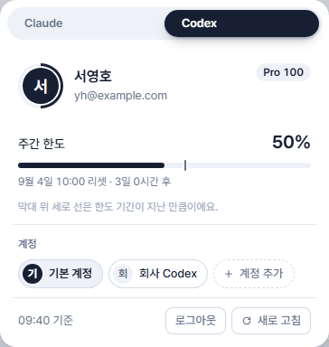

레일 하단 계정 카드를 누르면 열리는 패널을 "한도를 보는 곳"으로 고친 시안이에요. 풀려는 문제는 셋이에요. ① 패널이 Claude·Codex 탭 뒤에 숨어 한 번에 하나만 보인다. ② 막대 위 세로 선이 뭔지 알 수 없다. ③ 레일 카드가 Claude 한도 하나만 보여 준다. 고른 방향은 "한도 줄은 한 문장으로 말하기(다)", "패널은 Claude·Codex를 좌우로 나누고 가운데에 구분선", "레일 카드는 이름을 두고 AI 로고 링 둘로 보여 주기"예요.
지금은 이래요
실제 앱 화면을 offscreen으로 찍은 거예요(가짜 계정 데이터).

1 2 3 4
- 탭부터 시작해요. 이 패널이 한도를 보는 곳인지 이름이 어디에도 없고, Claude·Codex를 오가야 해서 둘을 비교할 수 없어요.
- 세로 선이 뭔지 몰라요. 선 하나가 "목표선"인지 "지금"인지 "한도"인지 짐작해야 해요.
- 38%가 쓴 양인지 남은 양인지 안 적혀 있어요. 예약 조건은 "남은 한도"라고 부르는데 여기는 쓴 비율이에요.
- 설명은 맨 아래 흐린 글씨 한 줄이에요. "막대 위 세로 선은 한도 기간이 지난 만큼이에요."를 읽고 위로 돌아가야 이해돼요.
- 레일 카드는 Claude 한도 하나만 보여요. 아래 "레일 카드" 절의 "현재"를 보세요.
패널: 탭을 없애고 두 AI를 좌우로
맨 위에 "한도"라는 제목을 두고, Claude는 왼쪽 Codex는 오른쪽에 나란히 놓은 뒤 가운데 구분선으로 나눠요. 계정 고르기·추가·로그아웃은 AI 이름 줄의 계정 단추 뒤로 접었고, "기준 시각"은 AI마다 따로 적어요(Codex는 마지막으로 쓴 때의 기록이라 Claude와 시각이 달라요). 한도 줄은 막대 아래에 "지금 속도면 …" 한 문장으로 결론을 말해요. 계정 단추를 눌러 보세요.
레일 카드: 두 AI를 같이
펼친 레일(224px)과 접힌 레일(64px)을 함께 보여요. 퍼센트는 AI마다 가장 많이 쓴 한도예요(지금과 같은 기준).
고른 안: 패널 다(좌우) + 레일 이름 유지·링 둘
- 한 문장(다)은 가장 직설적이지만 "지금 속도로 몇 시간 뒤에 가득 차요"를 새로 계산해요. 기간 초반에는 값이 크게 흔들려서 5% 미만 경과는 "가늠하기 일러요"로 가렸어요. 세로 선과 맨 아래 범례 문장은 없어져요.
- 좌우 배치는 패널이 364px에서 680px로 넓어져요. 창이 960px 이하면 레일이 접혀서 패널 가용 폭은 676px 이상이고, 961px 창에서 레일을 최대(360px)로 늘려도 581px예요. 아래 세 번째 프레임은 그보다 좁은 516px을 가정한 최악의 모양이에요. 600px 이하에서는 계정 단추의 이름을 빼고 화살표만 둬서(CSS 컨테이너 쿼리) 줄이 안 깨져요.
- 한도 줄 수가 달라요. Claude는 한도 3개, Codex는 1개라 오른쪽 아래가 비어요. 구분선은 두 열 높이를 따라 끝까지 이어져요.
- 레일 카드는 이름(서영호)을 두고, 글자 링 하나를 AI 로고 링 둘(퍼센트 포함)로 바꿔요. 접힌 레일에서도 링 둘이 세로로 서서 Claude만 말하던 문제가 사라져요. 대신 카드 높이가 조금 커지고, 이름은 Claude 계정 것이라 Codex 계정이 다르면 헷갈릴 수 있어요.
구현하게 되면 건드리는 곳
- ProfilePanel의 Seg 탭과 ClaudeProfile·CodexProfile 분기를 없애고 두 AI 구역을 한 번에 그려요. 지금은 "두 몸통은 한 번에 하나만 그려 id가 겹치지 않는다"는 전제라 #account-select·#usage-refresh·#login-box 같은 id를 AI별로 나눠야 해요.
- panels.css의 .profile-panel 너비(min(364px, …))를 넓히고 두 열 격자와 구분선을 더해요.
- Rail의 AccountCard가 accountStore만 읽고 getTopLimit이 한 계정의 한도만 고르는 것을 두 스토어로 넓혀요(codexAccountStore는 이미 있어요).
- tests/tools/ui의 profile-panel-codex 장면이 Codex 라디오를 누르는 것, desktop/CLAUDE.md "Codex 계정·한도·로그인과 Welcome"의 화면 문단, README 화면 설명도 같이 고쳐야 해요.
- 막대 위 세로 선(.usage-pace)과 범례가 사라지므로 viewFormat의 getUsagePace는 "지금 속도" 문장 계산(getUsageForecast)으로 바꿨어요.